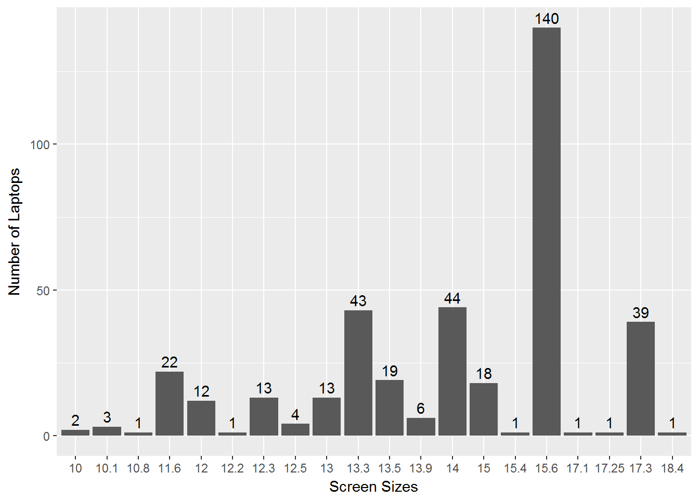

Web Scraping Tutorial
For this tutorial you must have R and Rstudio along with Google Chrome browser. You will also need to install an additional Chrome extension tool called “SelectorGadget”. You can find it on their website with instructions on how to use it to extract elements from a webpage.
Let us install and load the following packages in R: “xml2” for importing data from HTML and XML documents, “rvest” for web scraping and “tidyverse” for data manipulation, exploration and visualization.
# Loading the required packages into R session using library() function.
library(xml2)
library(rvest)
library(tidyverse)Let us import the first webpage from “Best Buy” website to scrape. Before getting the URL of the web page, we will conduct a search result by selecting “All laptops” in Category and select filters for “New” in Condition and “1 & Up” in Customer Rating to get laptops which are new and reviewed by customers.

Now, we will use read_html() function to extract the first page using the hyperlink from the browser.
# The read_html() function reads the webpage from the URL.
page1 <- read_html("https://www.bestbuy.com/site/laptop-computers/all-laptops/pcmcat138500050001.c?cp=1&id=pcmcat138500050001&qp=condition_facet%3DCondition~New%5Ecustomerreviews_facet%3DCustomer%20Rating~1%20%26%20Up")
# Extracting names from the webpage page1.
name <- html_nodes(page1, ".sku-header a") %>% html_text()
# Use the object name to check its contents.
name## [1] "Lenovo - 330-15ARR 15.6\" Laptop - AMD Ryzen 3 - 8GB Memory - 1TB Hard Drive - Onyx Black"
## [2] "Dell - Inspiron 15.6\" Laptop - AMD A6-Series - 4GB Memory - AMD Radeon R4 - 500GB Hard Drive - Black"
## [3] "HP - Stream 14\" Laptop - Intel Celeron - 4GB Memory - 32GB eMMC Flash Memory - Textured Linear Grooves In Aqua Blue"
## [4] "Lenovo - 14\" Laptop - Intel Celeron - 2GB Memory - 32GB eMMC Flash Memory - Mineral Gray"
## [5] "Lenovo - 330S-15IKB 15.6\" Laptop - Intel Core i5 - 8GB Memory - 128GB Solid State Drive - Platinum Gray"
## [6] "Dell - Inspiron 15.6\" Laptop - Intel Core i3 - 8GB Memory - 1TB Hard Drive - Black"
## [7] "HP - 15.6\" Touch-Screen Laptop - Intel Core i5 - 12GB Memory - 128GB Solid State Drive - HP Finish In Natural Silver"
## [8] "HP - 15.6\" Laptop - AMD A6-Series - 4GB Memory - AMD Radeon R4 - 1TB Hard Drive - HP Finish In Jet Black With A Maglia Texture"
## [9] "HP - Spectre x360 2-in-1 15.6\" 4K Ultra HD Touch-Screen Laptop - Intel Core i7 - 16GB Memory - 512GB SSD - HP Finish In Dark Ash Silver"
## [10] "Dell - Inspiron 2-in-1 13.3\" Touch-Screen Laptop - Intel Core i5 - 8GB Memory - 256GB Solid State Drive - Era Gray"
## [11] "Microsoft - Surface Go - 10\" Touch-Screen - Intel Pentium Gold - 8GB Memory - 128GB Storage - Silver"
## [12] "Dell - 2-in-1 15.6\" 4K Ultra HD Touch-Screen Laptop - Intel Core i7 - 16GB Memory - NVIDIA GeForce MX130 - 512GB SSD - Abyss Black"
## [13] "ASUS - VivoBook Max X541NA 15.6\" Laptop - Intel Pentium - 4GB Memory - 500GB Hard Drive - Chocolate black"
## [14] "Dell - Inspiron 2-in-1 15.6\" Touch-Screen Laptop - Intel Core i5 - 8GB Memory - 256GB Solid State Drive - Era Gray"
## [15] "Lenovo - Yoga 730 2-in-1 15.6\" Touch-Screen Laptop - Intel Core i7 - 8GB Memory - 256GB Solid State Drive - Iron Gray"
## [16] "Dell - G7 15.6\" Laptop - Intel Core i7 - 16GB Memory - NVIDIA GeForce GTX 1060 - 128GB Solid State Drive + 1TB Hard Drive - Licorice Black"
## [17] "Lenovo - 130-15AST 15.6\" Laptop - AMD A6-Series - 4GB Memory - AMD Radeon R4 - 500GB Hard Drive - Black"
## [18] "Acer - Spin 11 2-in-1 11.6\" Touch-Screen Chromebook - Intel Celeron - 4GB Memory - 32GB eMMC Flash Memory - Sparkly Silver"
## [19] "Lenovo - IdeaPad 11.6\" Laptop - Intel Celeron - 2GB Memory - 32GB eMMC Flash Memory - Mineral Gray"
## [20] "Lenovo - Legion Y530 15.6\" Laptop - Intel Core i7 - 16GB Memory - NVIDIA GeForce GTX 1050 Ti - 1TB Hard Drive - Black"
## [21] "Microsoft - Surface 13.5\" Touch-Screen Laptop - Intel Core i5 - 8GB Memory - 128GB Solid State Drive (First Generation) - Platinum"
## [22] "ASUS - ROG GU501GM 15.6\" Laptop - Intel Core i7 - 16GB Memory - NVIDIA GeForce GTX 1060 - 1TB Hybrid Drive + 128GB SSD - Brushed Black"
## [23] "MSI - 15.6\" Laptop - Intel Core i7 - 16GB Memory - NVIDIA GeForce GTX 1060 - 1TB Hard Drive + 256GB Solid State Drive - Aluminum Black"
## [24] "HP - ENVY x360 2-in-1 15.6\" Touch-Screen Laptop - Intel Core i7 - 12GB Memory - 256GB Solid State Drive - HP Finish In Natural Silver"The html_nodes() function from the rvest package will select the nodes from the HTML webpage page1. The node to be selected is specified by the CSS selector which we extracted using the SelectorGadget tool.
Now we will use the Pipe operator(%>%) to chain the html_nodes() with html_text(). When you chain the functions, the output of html_nodes() function will be given as input for the html_text() function which will extract text from the selected HTML node.
Let us extract the model number for every laptop:
# Laptop model numbers:
model <- html_nodes(page1, ".sku-attribute-title:nth-child(1) .sku-value") %>% html_text()
head(model) # head() displays only the first few elements from the object "model". ## [1] "IDEAPAD 330 15 - 81D2008FUS " "I3565-A453BLK-PUS "
## [3] "14-CB110NR " "81A5001UUS "
## [5] "81F5004EUS " "I3567-3276BLK-PUS "Every model number has a blank space at the end. To remove this blank space we will be using str_replace() function to replace the blank space(" “) with empty strin(”“).
To detect every blank space at the end we will use Regular Expression “\s$” which detects a space at the end of the string.
Let’s extract the remaining features like price, rating, reviews and combine them to form a dataframe using the data.frame() function.
# Removing blank space:
model <- str_replace(model, "\\s$", "")
# Laptop prices:
price <- html_nodes(page1, "#main-results .priceView-purchase-price span") %>% html_text()
# Laptop ratings:
rating <- html_nodes(page1, "#main-results .c-review-average") %>% html_text()
# Laptop review counts:
reviews <- html_nodes(page1, ".c-total-reviews") %>% html_text()
# Creating dataframe/dataset:
laptop_p1 <- data.frame(name, model, price, rating, reviews, stringsAsFactors = FALSE) # Setting the stringsAsFactors flag as FALSE to prevent string vectors to be converted to type factor.
head(laptop_p1) # head() can be used to display first few rows from the "laptop_p1" dataframe.## name
## 1 Lenovo - 330-15ARR 15.6" Laptop - AMD Ryzen 3 - 8GB Memory - 1TB Hard Drive - Onyx Black
## 2 Dell - Inspiron 15.6" Laptop - AMD A6-Series - 4GB Memory - AMD Radeon R4 - 500GB Hard Drive - Black
## 3 HP - Stream 14" Laptop - Intel Celeron - 4GB Memory - 32GB eMMC Flash Memory - Textured Linear Grooves In Aqua Blue
## 4 Lenovo - 14" Laptop - Intel Celeron - 2GB Memory - 32GB eMMC Flash Memory - Mineral Gray
## 5 Lenovo - 330S-15IKB 15.6" Laptop - Intel Core i5 - 8GB Memory - 128GB Solid State Drive - Platinum Gray
## 6 Dell - Inspiron 15.6" Laptop - Intel Core i3 - 8GB Memory - 1TB Hard Drive - Black
## model price rating reviews
## 1 IDEAPAD 330 15 - 81D2008FUS $329.99 2.0 (2)
## 2 I3565-A453BLK-PUS $279.99 4.0 (972)
## 3 14-CB110NR $219.99 2.5 (2)
## 4 81A5001UUS $149.99 4.0 (525)
## 5 81F5004EUS $503.99 4.5 (359)
## 6 I3567-3276BLK-PUS $379.99 4.2 (243)In the dataset, the price column is in type character(or string), we want to convert it to type numeric(or number). To do this we can use as.numeric() function, but this will convert the price to NA instead of numeric as the data values have non-numeric characters like “$” and “,” between numbers.
# Gives incorrect result:
# laptop_p1$price <- as.numeric(laptop_p1$price)To avoid the error, we will have to remove the non-numeric characters before using as.numeric() function to convert values to numbers.
we will use regular expression for detecting these non-numeric characters in the form of patterns. We will be using str_replace_all() function to replace the matched patterns(i.e. “$” and “,”) in the string with a empty space(“”).
# Removing "$" and "," from the prices:
laptop_p1$price <- str_replace_all(laptop_p1$price, "\\$|,", "")
# Now converting price to numeric:
laptop_p1$price <- as.numeric(laptop_p1$price)
# Laptop prices after converting to numeric type:
laptop_p1$price## [1] 329.99 279.99 219.99 149.99 503.99 379.99 579.99 299.99
## [9] 1599.99 749.99 549.00 1249.99 209.99 829.99 929.99 1099.99
## [17] 229.99 379.99 199.99 1029.99 799.00 1499.99 1449.99 969.99Convert the laptop ratings to numbers. The laptop review count also have non-numeric characters “(”, “)” and “,”.
# Converting ratings from character to numeric type:
laptop_p1$rating <- as.numeric(laptop_p1$rating)
# Removing "()" and "," from review values and converting it to numeric type:
laptop_p1$reviews <- str_replace_all(laptop_p1$reviews, "\\(|\\)|,", "") %>% as.numeric()
# Laptop reviews after converting to numeric:
laptop_p1$reviews## [1] 2 972 2 525 359 243 403 348 393 897 126 41 1226 129
## [15] 142 268 3 174 1422 89 69 190 1970 357Let’s separate the screen sizes of laptops into a new column from the name column. We can do this using the separate() function.
laptop_p1 <- separate(laptop_p1, name, c("name", "screen_size"), sep = "\\s+(?=(\\d{2}\\.\\d+\\W)|(\\d{2}\"|15\\S))")
# After separating the screen size column:
head(laptop_p1)## name
## 1 Lenovo - 330-15ARR
## 2 Dell - Inspiron
## 3 HP - Stream
## 4 Lenovo -
## 5 Lenovo - 330S-15IKB
## 6 Dell - Inspiron
## screen_size
## 1 15.6" Laptop - AMD Ryzen 3 - 8GB Memory - 1TB Hard Drive - Onyx Black
## 2 15.6" Laptop - AMD A6-Series - 4GB Memory - AMD Radeon R4 - 500GB Hard Drive - Black
## 3 14" Laptop - Intel Celeron - 4GB Memory - 32GB eMMC Flash Memory - Textured Linear Grooves In Aqua Blue
## 4 14" Laptop - Intel Celeron - 2GB Memory - 32GB eMMC Flash Memory - Mineral Gray
## 5 15.6" Laptop - Intel Core i5 - 8GB Memory - 128GB Solid State Drive - Platinum Gray
## 6 15.6" Laptop - Intel Core i3 - 8GB Memory - 1TB Hard Drive - Black
## model price rating reviews
## 1 IDEAPAD 330 15 - 81D2008FUS 329.99 2.0 2
## 2 I3565-A453BLK-PUS 279.99 4.0 972
## 3 14-CB110NR 219.99 2.5 2
## 4 81A5001UUS 149.99 4.0 525
## 5 81F5004EUS 503.99 4.5 359
## 6 I3567-3276BLK-PUS 379.99 4.2 243Now, we can also separate the specifications into another new column from the screen size column.
laptop_p1 <- separate(laptop_p1, screen_size, into = c("screen_size", "specifications"), sep = "\\S |\"", extra = "merge")
# After separating the specification column:
head(laptop_p1)## name screen_size
## 1 Lenovo - 330-15ARR 15.6
## 2 Dell - Inspiron 15.6
## 3 HP - Stream 14
## 4 Lenovo - 14
## 5 Lenovo - 330S-15IKB 15.6
## 6 Dell - Inspiron 15.6
## specifications
## 1 Laptop - AMD Ryzen 3 - 8GB Memory - 1TB Hard Drive - Onyx Black
## 2 Laptop - AMD A6-Series - 4GB Memory - AMD Radeon R4 - 500GB Hard Drive - Black
## 3 Laptop - Intel Celeron - 4GB Memory - 32GB eMMC Flash Memory - Textured Linear Grooves In Aqua Blue
## 4 Laptop - Intel Celeron - 2GB Memory - 32GB eMMC Flash Memory - Mineral Gray
## 5 Laptop - Intel Core i5 - 8GB Memory - 128GB Solid State Drive - Platinum Gray
## 6 Laptop - Intel Core i3 - 8GB Memory - 1TB Hard Drive - Black
## model price rating reviews
## 1 IDEAPAD 330 15 - 81D2008FUS 329.99 2.0 2
## 2 I3565-A453BLK-PUS 279.99 4.0 972
## 3 14-CB110NR 219.99 2.5 2
## 4 81A5001UUS 149.99 4.0 525
## 5 81F5004EUS 503.99 4.5 359
## 6 I3567-3276BLK-PUS 379.99 4.2 243Using the same technique/code to extract data from the second web page. We can get the second page hyperlink by clicking on page 2 of the website.
PAGE 2
page2 <- read_html("https://www.bestbuy.com/site/laptop-computers/all-laptops/pcmcat138500050001.c?cp=2&id=pcmcat138500050001&qp=condition_facet%3DCondition~New%5Ecustomerreviews_facet%3DCustomer%20Rating~1%20%26%20Up") # Using hyperlink of page 2.
# Laptop names:
name <- html_nodes(page2, ".sku-header a") %>%
html_text()
# Laptop model numbers:
model <- html_nodes(page2, ".sku-attribute-title:nth-child(1) .sku-value") %>%
html_text() %>%
str_replace("\\s$", "")
# Laptop prices:
price <- html_nodes(page2, "#main-results .priceView-purchase-price span") %>%
html_text() %>%
str_replace_all("\\$|,", "") %>%
as.numeric()
# Laptop ratings:
rating <- html_nodes(page2, "#main-results .c-review-average") %>%
html_text() %>%
as.numeric()
# Laptop reviews:
reviews <- html_nodes(page2, ".c-total-reviews") %>%
html_text() %>%
str_replace_all("\\(|\\)|,", "") %>%
as.numeric()
# Creating the dataframe for page 2:
laptop_p2 <- data.frame(name, model, price, rating, reviews, stringsAsFactors = F)
# Separating the screen size and specification columns from name column:
laptop_p2 <- separate(laptop_p2, name, c("name", "screen_size"), sep = "\\s+(?=(\\d{2}\\.\\d+\\W)|(\\d{2}\"|15\\S))") %>%
separate(screen_size, into = c("screen_size", "specifications"), sep = "\\S |\"", extra = "merge")
# First few rows of laptop data from Page 2:
head(laptop_p2)## name screen_size
## 1 Dell - 11.6
## 2 Dell - Inspiron 2-in-1 17.3
## 3 Dell - XPS 13.3
## 4 Samsung - Plus 2-in-1 12.2
## 5 Acer - Aspire 5 17.3
## 6 Acer - Nitro 5 15.6
## specifications
## 1 Chromebook - Intel Celeron - 4GB Memory - 16GB eMMC Flash Memory - Black
## 2 Touch-Screen Laptop - Intel Core i7 - 16GB Memory - NVIDIA GeForce MX150 - 2TB Hard Drive - Era gray
## 3 4K Ultra HD Touch-Screen Laptop - Intel Core i7 - 16GB Memory - 512GB Solid State Drive - Silver With Black Carbon Fiber Palm Rest
## 4 Touch-Screen Chromebook - Intel Celeron - 4GB Memory - 32GB eMMC Flash Memory - Stealth Silver
## 5 Laptop - Intel Core i5 - 8GB Memory - 1TB Hard Drive - Obsidian Black
## 6 Laptop - Intel Core i5 - 8GB Memory - NVIDIA GeForce GTX 1050 Ti - 256GB Solid State Drive - Shale Black
## model price rating reviews
## 1 C3181-C871BLK-PUS 199.00 4.4 5
## 2 I7773-7855GRY-PUS 1099.99 4.4 463
## 3 XPS9370-7392SLV-PUS 1615.99 4.8 6
## 4 XE521QAB 499.00 4.5 44
## 5 A51751568Y 579.99 5.0 4
## 6 AN515-53-55G9 799.99 4.5 245We can use rbind() function to merge the dataframes of page 1 and page 2.
laptop_p1_p2 <- rbind(laptop_p1, laptop_p2)
head(laptop_p1_p2)## name screen_size
## 1 Lenovo - 330-15ARR 15.6
## 2 Dell - Inspiron 15.6
## 3 HP - Stream 14
## 4 Lenovo - 14
## 5 Lenovo - 330S-15IKB 15.6
## 6 Dell - Inspiron 15.6
## specifications
## 1 Laptop - AMD Ryzen 3 - 8GB Memory - 1TB Hard Drive - Onyx Black
## 2 Laptop - AMD A6-Series - 4GB Memory - AMD Radeon R4 - 500GB Hard Drive - Black
## 3 Laptop - Intel Celeron - 4GB Memory - 32GB eMMC Flash Memory - Textured Linear Grooves In Aqua Blue
## 4 Laptop - Intel Celeron - 2GB Memory - 32GB eMMC Flash Memory - Mineral Gray
## 5 Laptop - Intel Core i5 - 8GB Memory - 128GB Solid State Drive - Platinum Gray
## 6 Laptop - Intel Core i3 - 8GB Memory - 1TB Hard Drive - Black
## model price rating reviews
## 1 IDEAPAD 330 15 - 81D2008FUS 329.99 2.0 2
## 2 I3565-A453BLK-PUS 279.99 4.0 972
## 3 14-CB110NR 219.99 2.5 2
## 4 81A5001UUS 149.99 4.0 525
## 5 81F5004EUS 503.99 4.5 359
## 6 I3567-3276BLK-PUS 379.99 4.2 243We can use this code to extract data from each page but it would be time consuming. To make this process more convenient we can use the map_df() function to apply this code to each page of all the 17 pages.
laptops <- map_df(1:17, function(i) {
cat(i, "")# Progress Indicator.
pg <- read_html(paste0("https://www.bestbuy.com/site/laptop-computers/all-laptops/pcmcat138500050001.c?cp=",i,"&id=pcmcat138500050001&qp=condition_facet%3DCondition~New%5Ecustomerreviews_facet%3DCustomer%20Rating~1%20%26%20Up")) # Get hyperlinks for all pages.
# Creates a dataframe containing data of all pages:
data.frame(name = html_nodes(pg, ".sku-header a") %>% html_text(),
model = html_nodes(pg, ".sku-attribute-title:nth-child(1) .sku-value") %>% html_text() %>% str_replace("\\s$", ""),
price = html_nodes(pg, "#main-results .priceView-purchase-price span") %>% html_text() %>% str_replace_all("\\$|,", "") %>% as.numeric(),
rating = html_nodes(pg, "#main-results .c-review-average") %>% html_text() %>% as.numeric(),
reviews = html_nodes(pg, ".c-total-reviews") %>% html_text() %>% str_replace_all("\\(|\\)|,", "") %>% as.numeric(),
stringsAsFactors = F)
}) %>%
# Separates the screen size and specification columns from name column:
separate(name, c("name", "screen_size"), sep = "\\s+(?=(\\d{2}\\.\\d+\\W)|(\\d{2}\"|15\\S))") %>%
separate(screen_size, into = c("screen_size", "specifications"),
sep = "\\S |\"", extra = "merge") %>%
# Adds a unique Id to all rows:
rowid_to_column("Row_id")## 1 2 3 4 5 6 7 8 9 10 11 12 13 14 15 16 17## Warning: Expected 2 pieces. Missing pieces filled with `NA` in 2 rows [375,
## 378].# Dataframe containing data from all pages:
head(laptops)## Row_id name screen_size
## 1 1 Lenovo - 330-15ARR 15.6
## 2 2 Dell - Inspiron 15.6
## 3 3 Lenovo - 14
## 4 4 HP - Stream 14
## 5 5 Lenovo - 330S-15IKB 15.6
## 6 6 Dell - Inspiron 15.6
## specifications
## 1 Laptop - AMD Ryzen 3 - 8GB Memory - 1TB Hard Drive - Onyx Black
## 2 Laptop - AMD A6-Series - 4GB Memory - AMD Radeon R4 - 500GB Hard Drive - Black
## 3 Laptop - Intel Celeron - 2GB Memory - 32GB eMMC Flash Memory - Mineral Gray
## 4 Laptop - Intel Celeron - 4GB Memory - 32GB eMMC Flash Memory - Textured Linear Grooves In Aqua Blue
## 5 Laptop - Intel Core i5 - 8GB Memory - 128GB Solid State Drive - Platinum Gray
## 6 Laptop - Intel Core i3 - 8GB Memory - 1TB Hard Drive - Black
## model price rating reviews
## 1 IDEAPAD 330 15 - 81D2008FUS 329.99 2.0 2
## 2 I3565-A453BLK-PUS 279.99 4.0 972
## 3 81A5001UUS 149.99 4.0 525
## 4 14-CB110NR 219.99 2.5 2
## 5 81F5004EUS 503.99 4.5 359
## 6 I3567-3276BLK-PUS 379.99 4.2 243The laptop screen size and specification for rows with row_ids 375 and 378 didn’t have any data values because the screen size was missing from the web page for these laptops. We can fix this error by manually adding them.
# Adding missing screen size manually:
for(i in 1:nrow(laptops)){
if(laptops$model[i] == "G50Vm-X1"){
laptops$screen_size[i] <- 15.6
}
else if(laptops$model[i] == "G70S-X1"){
laptops$screen_size[i] <- 17.1
}
}
laptops[c(375, 378),]## Row_id
## 375 375
## 378 378
## name
## 375 ASUS - Laptop with Intel® Centrino® Processor Technology - Black/Orange
## 378 ASUS - Laptop with Intel® Centrino® Processor Technology
## screen_size specifications model price rating reviews
## 375 15.6 <NA> G50Vm-X1 1249.99 4.7 46
## 378 17.1 <NA> G70S-X1 2099.99 4.6 5# Adding missing specification by splitting the name column:
for(i in 1:nrow(laptops)){
if(is.na(laptops$specifications[i])){
x <- str_split(laptops$name[i], " - ", n = 2)
laptops$name[i] <- x[[1]][1]
laptops$specifications[i] <- x[[1]][2]
}
}
laptops[c(375, 378),]## Row_id name screen_size
## 375 375 ASUS 15.6
## 378 378 ASUS 17.1
## specifications
## 375 Laptop with Intel® Centrino® Processor Technology - Black/Orange
## 378 Laptop with Intel® Centrino® Processor Technology
## model price rating reviews
## 375 G50Vm-X1 1249.99 4.7 46
## 378 G70S-X1 2099.99 4.6 5Finally we can use write_csv() function to export the cleaned laptops dataframe to simple text file which stores data in tabular format such as a CSV file.
# Exporting dataframe to a CSV file.
write.csv(laptops, file = "bblaptops.csv")You can view the CSV file in Microsoft Excel and use it with other software. 
Let’s do some simple data analysis on the laptops dataframe.
1. Find the top 10 popular laptops(other than Apple Macbooks) having the highest ratings.
arrange(laptops, desc(rating)) %>%
arrange(desc(reviews)) %>%
filter(!str_detect(name, "Apple")) %>%
head(10)## Row_id name screen_size
## 1 23 MSI - 15.6
## 2 46 Acer - R 11 2-in-1 11.6
## 3 110 MSI - 15.6
## 4 49 Samsung - Chromebook 3 11.6
## 5 276 Acer - R 11 2-in-1 11.6
## 6 19 Lenovo - IdeaPad 11.6
## 7 13 ASUS - VivoBook Max X541NA 15.6
## 8 319 Acer - 14
## 9 173 Dell - Inspiron 15.6
## 10 2 Dell - Inspiron 15.6
## specifications
## 1 Laptop - Intel Core i7 - 16GB Memory - NVIDIA GeForce GTX 1060 - 1TB Hard Drive + 256GB Solid State Drive - Aluminum Black
## 2 Touch-Screen Chromebook - Intel Celeron - 4GB Memory - 16GB eMMC Flash Memory - White
## 3 Laptop - Intel Core i7 - 16GB Memory - NVIDIA GeForce GTX 1070 - 512GB Solid State Drive - Matte Black With Gold Diamond Cut
## 4 Chromebook - Intel Celeron - 4GB Memory - 32GB eMMC Flash Memory - Metallic Black
## 5 Touch-Screen Chromebook - Intel Celeron - 4GB Memory - 32GB eMMC Flash Memory - White
## 6 Laptop - Intel Celeron - 2GB Memory - 32GB eMMC Flash Memory - Mineral Gray
## 7 Laptop - Intel Pentium - 4GB Memory - 500GB Hard Drive - Chocolate black
## 8 Chromebook - Intel Celeron - 4GB Memory - 32GB eMMC Flash Memory - Sparkly silver
## 9 Laptop - Intel Core i5 - 8GB Memory - NVIDIA GeForce GTX 1050 - 1TB + 8GB Hybrid Hard Drive - Black
## 10 Laptop - AMD A6-Series - 4GB Memory - AMD Radeon R4 - 500GB Hard Drive - Black
## model price rating reviews
## 1 GS63 STEALTH-010 1449.99 4.8 1970
## 2 CB5-132T-C8ZW 299.00 4.6 1717
## 3 GS65 STEALTH THIN-037 1999.99 4.8 1605
## 4 XE500C13-K03US 160.99 4.6 1598
## 5 CB5-132T-C9KK 164.99 4.6 1436
## 6 81A40025US 199.99 4.1 1422
## 7 X541NA-PD1003Y 209.99 3.9 1226
## 8 CB3-431-C5EX 284.99 4.5 1057
## 9 I7567-5000BLK-PUS 639.99 4.5 1041
## 10 I3565-A453BLK-PUS 279.99 4.0 9722. Classify/Group the inventory of laptops according to their screen size.
group_by(laptops, screen_size) %>%
summarize(Count = n()) %>%
arrange(desc(Count))## # A tibble: 20 x 2
## screen_size Count
## <chr> <int>
## 1 15.6 140
## 2 14 44
## 3 13.3 43
## 4 17.3 39
## 5 11.6 22
## 6 13.5 19
## 7 15 18
## 8 12.3 13
## 9 13 13
## 10 12 12
## 11 13.9 6
## 12 12.5 4
## 13 10.1 3
## 14 10 2
## 15 10.8 1
## 16 12.2 1
## 17 15.4 1
## 18 17.1 1
## 19 17.25 1
## 20 18.4 1We can also visualize the number of laptops for evach screen size using a bar chart.
ggplot(data = laptops ,mapping = aes(x = screen_size)) + geom_bar() + xlab("Screen Sizes") + ylab("Number of Laptops") + geom_text(stat='count', aes(label = ..count..), vjust = -0.4)